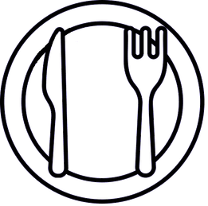
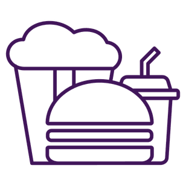

Entrées
Assiette de foie gras du Sud-Ouest
17,90Pain toasté, confiture d’abricots
Langue / Language
BAR • RESTAURANT • PARIS 20ᵉ
✦ FAIT MAISON • SERVICE CONTINU • TERRASSE ✦
BAR • RESTAURANT • PARIS 20ᵉ
✦ FAIT MAISON • SERVICE CONTINU • TERRASSE ✦
Pain toasté, confiture d’abricots
Cochonnaille et fromagère
Sandwich grillé jambon-fromage, sauce béchamel
Frites et salade
Sandwich grillé jambon-fromage, sauce béchamel, œuf au plat
Frites et salade
Salade
Salade
Salade
Salade
Salade
Salade
Fleur de sel, sauce au choix
Sauce au choix
Sauce champignons, pâtes
Selon arrivage
Riz basmati
Pain brioché, cheddar, steak haché, bacon, oignons caramélisés, salade, tomate, sauce burger.
Pain brioché, cheddar, poisson pané, légumes grillés, salade, tomate, sauce burger.
Pain brioché, cheddar, escalope de poulet pané croustillant, oignons caramélisés, salade, tomate, sauce burger.
Pain brioché, cheddar, steak végétarien, légumes grillés, salade, tomate, sauce burger.
Salade verte, tomate, escalope de poulet pané, œuf mimosa, croûton, toast de chèvre.
Salade verte, tomate, jambon sec, toast de cabécou, noix, miel.
Salade verte, tomate, concombre, haricots verts, légumes grillés, avocat.
Salade verte, saumon fumé, crevettes, avocat, concombre, tomate, feta, croûtons.
Accompagnement : frites, haricots verts, pâtes
Sauce au choix : poivre · champignons · roquefort — supplément sauce 2,00
Formule duo

23,90
✦Choix ci-dessous
Formule complète

27,90
✦Choix ci-dessous
Menu du jour
Uniquement le midi - sauf weekends et jours fériés
14,90
Choix selon l’ardoise
Menu enfant
Moins de 12 ans

10,90
Petit déjeuner
7,00
25 cl / 50 cl / 1 L
50 cl / 1 L
33 cl / 1 L
33 cl
33 cl
25 cl
25 cl
25 cl
25 cl
25 cl
orange, pomme, ananas, abricot, fraise, tomate
grenadine • fraise • citron • menthe • pêche • violette • passion • vanille • coco • orgeat • cassis
25 cl
Caramel ou vanille
5 cl — Blanc, rouge
2 cl
12 cl — Cassis, framboise, mûre, pêche
12 cl
8 cl
8 cl
5 cl — Blanc, rouge
5 cl
5 cl
25 cl
4 cl
4 cl
25 cl
25 cl
33 cl
33 cl
25 cl
Supplément Picon · 1,00
✦ Happy Hour (HH) · 17h → 23h ✦
✦ Happy Hour (HH) · 17h → 23h ✦
Rhum, menthe fraîche, citron vert, sucre de canne, eau gazeuse
Cachaça, citron vert, sucre de canne
Vodka, citron vert, sucre de canne
Rhum, citron vert, sucre de canne
Rhum blanc, rhum ambré, jus de citron vert, Cointreau, sirop d’orgeat
Rhum, jus d’ananas, crème de coco
Rhum, jus d’ananas, sirop de fraise, crème de coco
Rhum, Coca-Cola, jus de citron
Tequila, jus d’orange, sirop de grenadine
Apérol, Prosecco, orange, eau gazeuse
Liqueur de fleurs de sureau, Prosecco, orange, eau gazeuse
Suze, Schweppes Tonic, citron
Tequila, jus de citron vert, sirop de cassis, Schweppes Tonic
Vodka, jus de citron vert, ginger beer
Rhum, jus de citron vert, ginger beer
Gin, jus de citron vert, ginger beer
Gin, jus de citron vert, sucre de canne, limonade
Vodka, Cointreau, jus de cranberry, jus de citron vert
Vodka, Cointreau, crème de pêche, jus d’orange, jus de cranberry
Vodka, tomate, citron et épices
Crème de violette, champagne, cerise
Prosecco, crème de violette, eau gazeuse, myrtilles
Gin, crème de violette, jus de citron jaune
Rhum, sirop de fruit de la passion, jus de citron
Prosecco, vodka, sirop de fruit de la passion, citron vert
Tequila, Cointreau, jus de citron vert
Vodka, liqueur de café, cerise
Cointreau, amaretto, jus d’ananas
Vodka, liqueur de café, expresso, sucre de canne
✦ Sans alcool — 25 cl ✦
Sirop de violette, jus de citron vert, Schweppes Tonic
Jus d’ananas, jus d’orange, sirop de grenadine
Jus d’orange, jus d’ananas, jus de citron, sirop de cassis
Citron vert, menthe, sucre de canne, eau gazeuse
Jus d’ananas, crème de coco
Jus de tomate, jus de citron, épices
| N° | Appellation | 14 cl | 25 cl | 50 cl | 75 cl |
|---|---|---|---|---|---|
| 1 | Bordeaux AOP — Château la Gabarre | 5,20 | 9,90 | 18,90 | 22,90 |
| 2 | Côtes du Rhône AOP Bio — Les 3 Garçons | 4,50 | 8,60 | 16,50 | 20,90 |
| 3 | Brouilly AOP — Réserve de Beauvoisie | 6,50 | 12,50 | 23,90 | 28,90 |
| 4 | IGP Pays d’Oc Bio — Le Titi, Pinot Noir | 3,50 | 6,50 | 11,90 | 16,90 |
| 5 | Saint-Pourçain AOP — La Ficelle | 4,90 | 9,40 | 17,90 | 21,90 |
| 6 | Pic Saint-Loup AOP — Puech de Fourques | — | — | — | 37,50 |
| 7 | Crozes-Hermitage AOP — Chante Passo | — | — | — | 45,90 |
| 8 | Gigondas AOP Bio — Pierre Amadieu, Romane Machotte | — | — | — | 58,00 |
| N° | Appellation | 14 cl | 25 cl | 50 cl | 75 cl |
|---|---|---|---|---|---|
| 1 | Petit Chablis AOP — La Revire | 8,10 | 15,60 | 29,90 | 39,90 |
| 2 | IGP Pays d’Oc — Le Sudiste Chardonnay | 4,40 | 8,30 | 15,50 | 21,50 |
| 3 | IGT Terre Siciliane Bio — Vinisella Pinot Grigio La Passione | 4,10 | 7,80 | 14,50 | 19,50 |
| 4 | IGP Côtes de Gascogne Bio — Domaine de Maouries, les fruits | 6,90 | 12,90 | 24,60 | 31,90 |
| N° | Appellation | 14 cl | 25 cl | 50 cl | 75 cl |
|---|---|---|---|---|---|
| 1 | Côtes de Provence AOP Bio — Romain Desbastides | 5,80 | 10,50 | 19,90 | 26,90 |
| 2 | IGP Méditerranée Bio — La Demoiselle sans Gêne | 4,80 | 8,50 | 16,20 | 22,60 |
| N° | Appellation | Coupe 12 cl | 75 cl |
|---|---|---|---|
| 1 | Champagne H. Richard — Cuvée Henri | 9,50 | 58,00 |
| 2 | Champagne Nicolas Feuillatte — Brut Réserve Exclusive | — | 79,00 |
| 3 | Prosecco Spumante Il Poggio — Blanc de Noirs Extra Dry | 4,90 | 28,90 |
Coulis de fruits rouges
Glace vanille
Glace vanille ou caramel beurre salé
Assortiment de mignardises — thé + 1 €
Vanille, caramel beurre salé, chocolat, café, pistache, noisette
Citron vert, fraise, framboise
2 boules vanille, sauce chocolat, chantilly
2 boules chocolat, sauce chocolat, chantilly
2 boules café, expresso, chantilly
2 boules caramel beurre salé, sauce caramel, chantilly
2 boules citron vert arrosées de vodka (2 cl)